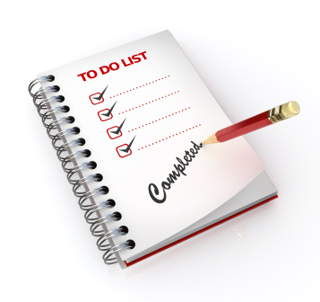
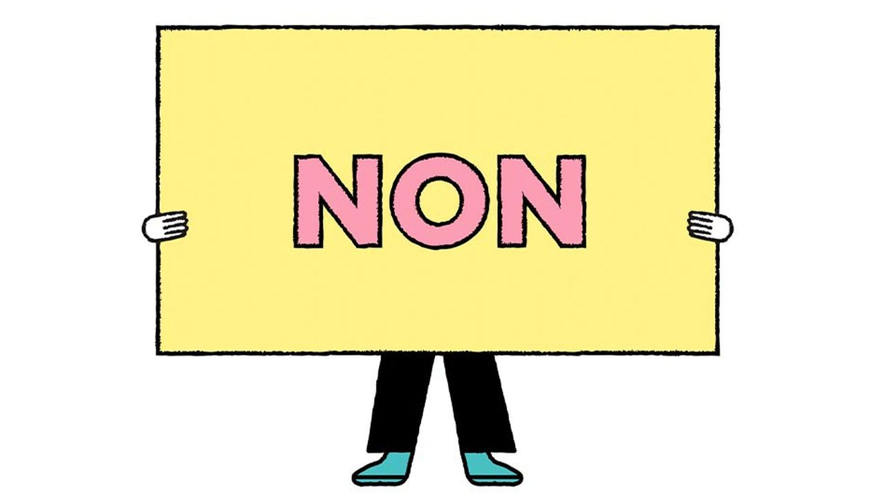
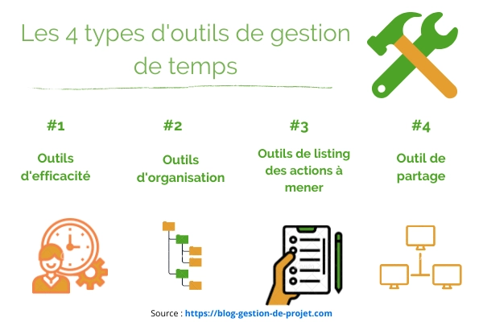

La gestion du temps
La gestion du temps est essentielle pour une vie équilibrée et productive. Voici quelques conseils pour vous aider à mieux gérer votre temps :
- Établissez des objectifs clairs : Identifiez vos objectifs à court et à long terme. Cela vous aidera à prioriser vos tâches en fonction de leur importance par rapport à vos objectifs
- Faites une liste de tâches : Chaque jour, établissez une liste des tâches à accomplir. Classez-les par ordre de priorité et concentrez-vous sur les plus importantes.

- Utilisez un planning :Organisez votre journée en utilisant un planning ou un calendrier. Bloquez du temps pour des tâches spécifiques et respectez ces plages horaires autant que possible.
- Apprenez à dire non :Il est important de reconnaître vos limites et de ne pas surcharger votre emploi du temps. Apprenez à dire non aux engagements qui ne sont pas en alignement avec vos objectifs principaux.

- Évitez la procrastination :Attaquez-vous aux tâches difficiles en premier. Cela vous permettra de les aborder avec une énergie et une concentration maximales.
- Regroupez les tâches similaires :Faites plusieurs tâches similaires en une seule séance pour maximiser votre efficacité. Cela réduit le temps nécessaire pour passer d'une activité à l'autre.
- Utilisez des outils de gestion du temps :Des outils tels que des applications de gestion de tâches, des rappels ou des techniques comme la technique Pomodoro peuvent vous aider à rester concentré et organisé.

- Prenez des pauses :Planifiez des pauses régulières pour vous détendre et recharger votre énergie. Cela peut améliorer votre concentration et votre productivité.
- Évitez les distractions :Identifiez les sources de distractions (comme les médias sociaux, les notifications de téléphone) et minimisez-les pendant les périodes de travail intense.
- Évaluez et ajustez :À la fin de chaque journée ou chaque semaine, évaluez vos progrès. Identifiez ce qui a fonctionné et ce qui peut être amélioré, puis ajustez votre approche en conséquence
La gestion du temps est un processus continu d'ajustement et d'adaptation. Trouvez ce qui fonctionne le mieux pour vous et soyez flexible dans votre approche pour maximiser votre efficacité.
Apprendre les langues facilement avec ces sites
Apprendre les langues facilement avec ces sites : Notre sélection de sites pour apprendre les langues :
- Pour Francais : Si l'on juge les plateformes d'apprentissage des langues en fonction de la qualité et de la variété de leur matériel pédagogique, digiSchool, Duolingo et Français facile sont les meilleurs sites web gratuits pour apprendre l'anglais.
- For English : Si l'on juge les plateformes d'apprentissage des langues en fonction de la qualité et de la variété de leur matériel pédagogique, VOA Learning English, Duolingo et BBC Learning English sont les meilleurs sites web gratuits pour apprendre l'anglais.
- für Deutschland :Si l'on juge les plateformes d'apprentissage des langues en fonction de la qualité et de la variété de leur matériel pédagogique, Deutsche Welle, Deutsch Akademie et Deutsch Training sont les meilleurs sites web gratuits pour apprendre l'anglais.
- Ressources multilingues :Si l'on juge les plateformes d'apprentissage des langues en fonction de la qualité et de la variété de leur matériel pédagogique, Busuu, Duolingo et Language Guide sont les meilleurs sites web gratuits pour apprendre les langues.
Les langues et une moyens de cumminication tres important dans la vie social et la vie professionnelle .